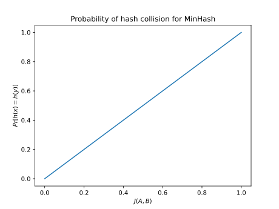

Jaccard similarity
This section is currently being developed. If you're interested in helping write this section, feel free to open a pull request; otherwise, please check back later.
Definition
Jaccard similarity is a statistic that measures the amount of overlap between two sets. It is defined as
\[J(A,B) = \frac{|A \cap B|}{|A \cup B|}\]
$J(A,B)$ is bounded by $0 \le J(A,B) \le 1$, with values close to 1 indicating high similarity and values close to 0 indicating low similarity.
You can calculate Jaccard similarity with the LSHFunctions package by calling jaccard:
julia> using LSHFunctions;
julia> A = Set([1, 2, 3]); B = Set([2, 3, 4]);
julia> jaccard(A,B) ==
length(A ∩ B) / length(A ∪ B) ==
0.5
trueMinHash
MinHash[Broder97] is a hash function for Jaccard similarity. It takes as input a set, and returns as output a UInt32 or a UInt64. To sample a function from the MinHash LSH family, simply call MinHash with the number of hash functions you want to generate:
julia> hashfn = MinHash(5);
julia> n_hashes(hashfn)
5
julia> hashtype(hashfn)
UInt64
julia> A = Set([1, 2, 3]);
julia> hashfn(A)
5-element Array{UInt64,1}:
0x21be0e591a3b69ea
0x19c5f638a776ab3c
0x63c12fd5d2f073ab
0x5c6b11e538a36352
0x129ef927e80a1b39The probability of a collision for an individual hash between sets $A$ and $B$ is just equal to their Jaccard similarity, i.e.
\[Pr[h(A) = h(B)] = J(A,B)\]

Footnotes
- Broder97Broder, A. On the resemblance and containment of documents. Compression and Complexity of Sequences: Proceedings, Positano, Amalfitan Coast, Salerno, Italy, June 11-13, 1997. doi:10.1109/SEQUEN.1997.666900.